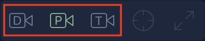
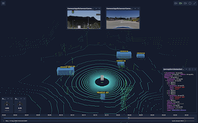

Visualizing Test Results top

The visualization tab allows you to playback a simulation and see the current state of each sensor over time. The visualization tab is only available in test reports of completed cloud simulations. For local simulations, you can use an interactive visualizer tool on the autonomous driving system side such as RViz for ROS or cyber_visualizer for Apollo.
To navigate to the visualizer from Test Results,
- Select
Viewfor a test result.
- If there are multiple vehicles, select a vehicle.

- Select the
Visualizationtab.


Note: Only Apollo-based recordings are currently supported by cloud simulations and the visualizer.
The visualization section breaks down into the following features:
Viewer top#

The primary feature of the Visualization Tab is the Viewer which creates a rendering of available sensor data to aid inspecting the results of a simulation.
- LIDAR is rendered as dots ranging from white to red illustrating the altitude relative to the ground.
- Detected obstacles are rendered enclosed in a blue box with labels above them.
- Trajectories are rendered as a wide line at ground level indicating the planned route for the vehicle.
Each sensor can be enabled or disabled using the Sensor Menu to aid in focusing on specific results.
Full Screen Mode top#

The Viewer can switch to full screen mode using the full screen button to gain more space to view the visualization and widgets. Pressing the Escape key or clicking the full screen button a second time will exit full screen.
Camera Angles top#

- Perspective - The camera is positioned above and behind the vehicle. Pan, tilt, zoom, and rotate are all available.
- Driver - The camera is fixed at the front of the vehicle. Only rotate is available.
- Top down - The camera is fixed above the vehicle looking down. Pan, zoom, and rotate are available.
Pan / Tilt / Zoom / Rotate top#
The camera position can be further refined by panning, tilting, zooming, or rotating if supported by the current camera angle.
- To pan or tilt, click and drag within the viewer.
- To zoom, hold Control (Command on Mac) and scroll with the scroll wheel within the viewer.
- To rotate, hold Control (Command on Mac), click, and drag within the viewer.

To recenter the viewer after panning or rotating, click the recenter button. Note that zoom and tilt values are maintained when re-centering.
Sensor Menu top#

The Sensor menu contains a list of all available sensors for the selected vehicle in this simulation. They are arranged in a tree based on the full name of the sensor from the simulation. Branches of the tree can be collapsed or expanded using the triangle icon.
If the sensor can be visualized in the viewer, selecting the sensor will toggle it on and off in the viewer. When the sensor is visible, the eye icon will be green. To view the details of the sensor at the current time, click the message icon to display the Message Widget. When the widget is visible, the message icon will be green.
If the sensor cannot be visualized in the view, selecting the sensor will toggle a widget for that sensor. When the widget is visible, the widget icon will be green.
Hiding the sensor menu top#
The Sensor menu can be hidden using the close button to reveal more of the viewer. When hidden, the menu is collapsed to a menu icon. To expand the menu, click the menu icon.
Playback Control top#

The playback control manages the playback of the simulation results. The control consists of the following components:
- A slider component which can be selected or dragged to move to a specific time of the simulation.
- Tick labels above the slider which indicate the time relative to the start of the simulation.
- The play/pause button which toggles automatic playback of the simulation at the current time.
- The simulation time which displays the current time according to the simulation's time.
- The lookahead slider allows selection of the amount of time, in seconds, to display lookahead predictions if supported by the simulation.
Widgets top#

Each sensor can be further visualized with floating widgets displayed on top of the viewer. By default, all widgets are hidden but may be shown by selecting the eye icon from the sensor menu. Once displayed, each widget may be moved, resized, and closed.
{kind=link}
- To move a widget, click and drag anywhere where the cursor changes to the move icon.
- To resize a widget, click and drag from the lower right corner of the widget.
- To close a widget, click the close button in the upper right corner of the widget.
To view a different sensor in an open widget, click the sensor name in the title bar which will open a dropdown menu. This menu will only include sensors that can be displayed in the current widget. Typing part of the desired sensor's name will filter the dropdown to only those that match the entered text.

Camera Widget top#

The camera widget displays the image captured by a camera sensor at the current playback time.
Meter Widget top#

The meter widget includes a gauge component that displays a numeric value within a predefined range. The range and unit of the value are pre-configured by the simulator. This widget is used for data streams like the current velocity or acceleration.
Note: The meter widget does not support resizing.
Message Widget top#

The message widget displays the data for the selected sensor at the current playback time. The data is presented as a tree which can be expanded or collapsed using the triangle icon. The entire tree can be expanded or collapsed using the expand button in the title bar. The data, in JSON format, may also be copied to the clipboard using the clipboard icon in the title bar.
Note: Because the content of the widget is selectable, you must click and drag the border around the message in order to move the widget.
Callbacks top#
Callback events are categorized as one-time events during a test case that either affect the ego vehicle, or that the ego vehicle causes in the environment. The following types of events are supported:
- Collision involving ego (EgoCollision)
- Speed limit violation (SpeedViolation)
- Sudden braking (SuddenBrake)
- Sudden steer (SuddenSteer)
- Low simulation performance (LowFPS)
The occurrence of at least one of these events will cause a simulation to be evaluated as "Failed".

For each callback event, the returned information is reported, including the simulation time at which the event occurred.
Selecting the eye icon will cause the visualization to seek to the time of the event in order to view the state of each sensor at that time.
EgoCollision top#
A collision involving an ego vehicle.
| Field | Description | Units |
|---|---|---|
| OtherType | Type of agent with which ego collided | NPC|Pedestrian|Obstacle |
| EgoVelocity | Velocity vector of ego at time at collision time | x, y, z in m/s |
| OtherVelocity | Velocity vector of agent/object at collision time | km/hr |
| EgoCollisionTotal | Number of ego collisions in the event |
SpeedViolation top#
A speed limit violation by an ego vehicle, based on the lane speed limit in the map annotations.
| Metric | Description | Units |
|---|---|---|
| Duration | Duration of speed limit violation event | time |
| Max speed | Maximum speed of ego vehicle during event. | m/s |
| SpeedLimit | The ego lane's annotated speed limit of the HD map | m/s |
EgoStuck top#
An ego stuck event by the ego vehicle, in which the ego travels a threshold distance and then stops moving for a threshold time
SuddenBrake top#
A sudden braking event by the ego vehicle, in which it exceeds a threshold deceleration value.
SuddenSteer top#
A sudden steering event by the ego vehicle, in which absolute magnitude of steering angle exceeds a threshold value.
LowFPS top#
A low simulation performance to indicate that results may not be accurate due to sufficiently low framerate during simulation on the cluster.